전자산업기사 (2016-10-01 기출문제)
1과목: 전자회로
1. 발진회로에 대한 설명으로 옳은 것은?
- 수정 발진회로는 수정편의 압전효과를 이용한다.
- 콜피츠 발진회로는 RC 발진회로의 한 종류이다.
- 블로킹 발진회로는 정현파 발진회로의 한 종류이다.
- 수정편의 두께는 발진주파수와 무관하다.
(정답률: 84%)

2. 다음 회로에 입력신호로 정현파를 인가하였을 경우 출력 파형은?
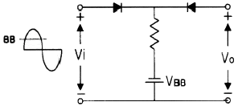
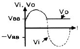
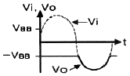
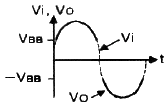
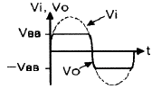
(정답률: 87%)
3. 단상반파 정류회로에 대한 설명 중 틀린 것은? (단, 입력전류의 최대값은 Im이고, 부하는 저항을 사용한 경우라 가정한다.)
- 평균전류는 Im/π 이다.
- 출력전류의 실효값은 Im/2 이다.
- 최대역전압(PIV)은 AC 입력 전압의 최대값이다.
- 맥동률은 0.21이다.
(정답률: 72%)
4. 이상적인 연산증폭기의 두 입력 전압이 V1=V2일 때 출력전압으로 가장 적합한 것은?
- 0
- V1
- 2V1
- 무한대(∞)
(정답률: 80%)
5. 다음 회로의 명칭으로 가장 적합한 것은? (단, R1=R2=R3=R4 이다.)
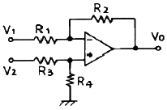
- 이상기
- 차동증폭기
- 대수증폭기
- 부호변환기
(정답률: 88%)
6. 트랜지스터의 스위치 동작 시에 대한 설명으로 틀린 것은?
- 트랜지스터의 스위치 동작은 TR의 콜렉터와 이미터 사이를 스위치로 이용한 것이다.
- 입력 전압이 0.6V 이하인 상태에서는 Ic=0일 경우에 스위치가 OFF 된다.
- 트랜지스터의 스위치 동작 시 입력전압을 임의로 조정(약 0.7V 이사인 상태)하여 사용할 수 없다.
- 입력 전압이 크고(약 0.7V 이상인 상태) 트랜지스터가 포화되어 가는 상태에서는 Ic≒Vcc/RL일 경우에 스위치가 ON 된다.
(정답률: 75%)
7. 변압기 1차 전압(Vin)이 100V이고 2차 전압은 10Vrms일 때, 브리지 정류기에 대한 출력전압 Vout의 피크값(peak voltage)은 약 몇 V 인가?(오류 신고가 접수된 문제입니다. 반드시 정답과 해설을 확인하시기 바랍니다.)
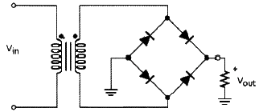
- 9.3
- 8.4
- 13.44
- 12.74
(정답률: 55%)
8. 다음 회로의 명칭은 무엇인가?
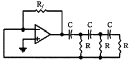
- Wien bridge 발진 회로
- Phase shift 발진 회로
- Twin-T 발진 회로
- Colpitts 발진 회로
(정답률: 75%)
9. 전압증폭도 100인 증폭기에서 귀환율 β=0.01의 부귀환을 걸었을 때 출력전압은 몇 V 인가? (단, 입력전압은 0.1V이다.)
- 0.9
- 5
- 10
- 22
(정답률: 48%)
10. 증폭회로에서 부귀환을 하는 목적으로 틀린것은?
- 이득의 감소
- 주파수 대역폭의 감소
- 출력 임피던스의 변화
- 잡음 특성의 개선
(정답률: 72%)
11. 임계 주파수(critical frequency)와 관계가 없는 것은?
- 출력 전력이 중간 영역에서 값이 반으로 강하되는 주파수
- 전력 이득의 6dB가 감소
- 모서리 주파수
- 차단 주파수
(정답률: 75%)
12. 여러 개의 신호들을 조합하여 하나의 신호를 선택하는 것은? (문제오류로 실제 시험에서는 모두 정답처리 되었씁니다. 여기서는 4번을 누르면 정답처리됩니다.)
- 레지스터(register)
- 버퍼(buffer)
- 라인 트랜시버(line transceiver)
- 디멀티플렉서(demultiplexer)
(정답률: 87%)
13. 다음 펄스 변조 방식 중 불연속 변조 방식은?
- AM
- FM
- PCM
- PM
(정답률: 86%)
14. 단일 증폭기와 비교한 B급 푸시풀 증폭기의 특징으로 적합하지 않은 것은?
- 효율이 더 높다.
- 더 큰 출력을 얻는다.
- 전원의 맥동에 의한 잡음이 제거된다.
- 홀수 차수의 고조파에 의한 일그러짐이 감소된다.
(정답률: 78%)
15. 윈 브리지 발진기(Wien bridge oscillator)의 특징으로 틀린 것은?
- 주파수 변화가 쉽다.
- 출력파형이 양호하다.
- 저역 통과 필터와 같은 역할을 한다.
- 매우 낮은 주파수 발생회로이다.
(정답률: 61%)
16. 전압이득이 40dB인 저주파 증폭기에서 출력신호의 왜율이 10%일 때, 이를 1%로 개선하기 위한 부귀환율(β)은?
- 0.01
- 0.03
- 0.⑤
- 0.09
(정답률: 70%)
17. 전력증폭기의 직류 공급 전압 및 전류가 10V, 400mA이고 부하에서의 출력 교류 전력이 3.6W일 때, 이 증폭기의 효율은 몇 % 인가?
- 70
- 75
- 90
- 95
(정답률: 77%)
18. 다음 연산증폭기 회로에서 RL에 흐르는 전류가 5mA일 때, RL 값은 몇 kΩ 인가?
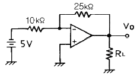
- 2.5
- 4
- 5
- 7.2
(정답률: 79%)
19. 출력 140W 되는 반송파를 단일 주파수로 30% 변조하였을 때 하측파대의 전력은 약 몇 W 인가?(오류 신고가 접수된 문제입니다. 반드시 정답과 해설을 확인하시기 바랍니다.)
- 3.15
- 6.3
- 73.15
- 146.3
(정답률: 59%)
20. 그림의 회로에서 VB가 2V이고, V1이 진폭 4V의 정현파이면 V2의 파형은 어떻게 되는가?
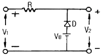
- 2V 이하 부분이 잘린다.
- 2V 이상 부분이 잘린다.
- V1과 같은 파형이다.
- V1보다 진폭이 커진다.
(정답률: 67%)
2과목: 전기자기학 및 회로이론
21. 그림과 같은 반지름 a(m)인 반구 도체 2개가 대지에 매설되어 있다. 이 경우 양 반구 도체 사이의 저항은? (단, 대지의 고유저항을 ρ라 하고, 도체의 저항률은 0이며, l≫a이다.)
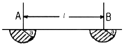
- ρ/2πa
- ρ/πa
- πρ
- 2πρ
(정답률: 59%)
22. 자속밀도 B(Wb/m2 ) 내에서 전류 I(A)가 흐르는 도선이 받는 힘 F(N)을 옳게 표현한 것은?
- F=IdL×B
- F=IdL∙B
- F=IB/dL
- F=dL/IB
(정답률: 68%)
23.
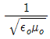
(m/s)의 값은?- 1×108
- 2×108
- 3×108
- 4×108
(정답률: 72%)
24. 자기인덕턴스가 L1, L2이고 상호인덕턴스가 M인 두 회로의 결합계수가 1일 때, 성립되는 식은?
- L1∙L2 = M
- L1∙L2 = M2
- L1∙L2 ＞ M2
- L1∙L2 ＜ M2
(정답률: 49%)
25. 권수 3000회인 공심 코일의 자기인덕턴스는 0.06mH이다. 자기인덕턴스를 0.135mH로 하려면 권수는?
- 2000회
- 4500회
- 5500회
- 6750회
(정답률: 63%)
26. 다음 물질 중에서 비유전율(εs)이 가장 큰 것은?
- 물(증류수)
- 유리
- 종이
- 변압기 기름(절연유)
(정답률: 83%)
27. 히스테리시스손은 주파수 및 최대 자속밀도와 어떤 관계가 있는가?
- 주파수와 최대 자속밀도에 비례한다.
- 주파수에 비례하고 최대 자속밀도의 1.6승에 비례한다.
- 주파수와 최대 자속밀도에 반비례한다.
- 주파수에 반비례하고 최대 자속밀도의 1.6승에 비례한다.
(정답률: 66%)
28. 3μF의 콘덴서에 9×10-4C의 전하를 축적할 때의 정전 에너지는 몇 J 인가?
- 1.35×10-1
- 1.35×10-4
- 1.35×10-7
- 1.35×10-12
(정답률: 56%)
29. 전자계에서 전파속도와 관계없는 것은?
- 주파수
- 유전율
- 비투자율
- 도전율
(정답률: 63%)
30. 전하량 e(C), 질량 m(kg)인 정지된 전자에 전계 E(V/m)를 가하였을 때, t초 후에 전자의 속도(m/s)는?
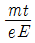
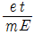
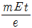
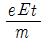
(정답률: 58%)
31. R-X 병렬회로에 e=Emsinωt[V]를 가했더니 i=Imsin(ωt-θ)[A]의 전류가 흘렀다. 이 회로의 X[Ω]은?
- 합성 리액턴스
- 순 저항
- 유도 리액턴스
- 용량 리액턴스
(정답률: 67%)
32. 2단자망의 구동점 임피던스가 Z(s)=A(s)/B(s) 표현할 때 옳게 설명한 것은?
- A(s)=0이면 영점, 회로가 개방 상태이며, B(s)=0이면 극점, 회로가 단락 상태이다.
- A(s)=∞이면 영점, 회로가 개방 상태이며, B(s)=∞이면 극점, 회로가 단락 상태이다.
- A(s)=0이면 영점, 회로가 단락 상태이며, B(s)=0이면 극점, 회로가 개방 상태이다.
- A(s)=∞이면 영점, 회로가 단락 상태이며, B(s)=∞이면 극점, 회로가 개방 상태이다.
(정답률: 68%)
33. 그림과 같은 전류 파형의 라플라스 변환은?
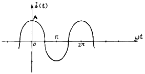
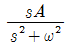
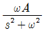
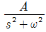
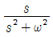
(정답률: 51%)
34. 이상 변압기(ideal transformer)를 만족하는 3가지 조건이 아닌 것은?
- 코일에 관계되는 손실이 0일 것
- 두 코일 간에 결합계수가 1일 것
- 두 코일의 각 인덕턴스가 무한대일 것
- 단자 전압비는 권수비의 역수와 같을 것
(정답률: 66%)
35. 공진 회로에 있어서 선택도 Q를 표시하는 식은? (단, RLC 직렬 공진 회로이다.)
- ωoL/R
- ωo/RL
- R/ωoL
- RL/ωo
(정답률: 68%)
36. 다음 회로에서 R=XC일 때 C 양단의 전압은 다음 중 어느 것인가?
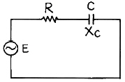
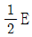
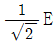
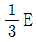
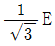
(정답률: 61%)
37. 다음 T형 회로의 1-1′ 단자에서 본 영상 임피던스는?
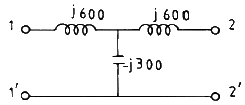
- 0
- 1
- j 1/300
- j 1/600
(정답률: 56%)
38. 상호 인덕턴스 M=10mH인 회로에서 1차 코일에 5A의 전류가 0.1초 동안에 10A로 변화할 때 2차 유도기전력은 몇 V 인가?
- 0.5
- 1.2
- 1.8
- 2.5
(정답률: 58%)
39. 다음 회로에 200V의 전압을 가할 때 저항 2Ω에 흐르는 전류는 몇 A 인가?
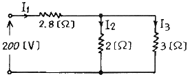
- 10
- 20
- 30
- 40
(정답률: 62%)
40. 그림은 리액턴스 회로망의 주파수 특성을 표시한 것이다. 다음 어느 회로망의 주파수 특성인가?
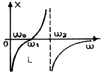
- LC 병렬회로에 L이 직렬 연결된 회로
- LC 병렬회로에 C가 직렬 연결된 회로
- LC 병렬회로에 LC가 직렬 연결된 회로
- LC 병렬회로에 LC가 병렬 연결된 회로
(정답률: 71%)
3과목: 전자계산기일반
41. 10진수 657을 팩(PACK) 형식으로 표현하면?
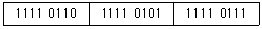
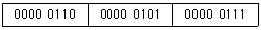
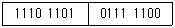
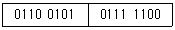
(정답률: 71%)
42. 어드레스선이 8개, 데이터선이 8개인 ROM의 기억 용량은 몇 바이트(byte)인가?
- 64
- 256
- 512
- 1024
(정답률: 74%)
43. 하나의 명령 사이클을 실행하는데 2개의 머신 사이클이 필요하다고 했을 때 CPU 클록 주파수를 10MHz로 동작시켰다. 이 때 1개의 명령 사이클을 실행하는데 걸리는 시간은? (단, 각각의 머신 사이클은 5개의 머신 스테이로 구성되어 있다.)
- 0.1μs
- 1μs
- 10μs
- 100μs
(정답률: 70%)
44. 중앙처리장치(CPU) 프로세서를 크게 두 부분으로 분류하면?
- 제어장치와 기억장치
- 연산장치와 논리장치
- 산술장치와 연산장치
- 연산장치와 제어장치
(정답률: 81%)
45. Read와 Write가 가능한 주기억 장치 소자로 기억 상태를 유지하기 위해 주기적으로 재생전원이 필요한 반도체 기억 소자는?
- DRAM
- SRAM
- EPROM
- PROM
(정답률: 77%)
46. 프로그램 언어로 프로그램 코드를 작성하는 것을 무엇이라 하는가?
- Debugging
- Flowchart
- Coding
- Execute
(정답률: 89%)
47. 중앙처리장치의 기능에 대한 설명 중 잘못된 것은?
- 전달기능 - 버스(BUS)
- 연산기능 - 연산기(ALU)
- 기억기능 - 광학마크판독기(OMR)
- 제어기능 - 조합회로와 기억소자
(정답률: 80%)
48. 오퍼랜드(operand)에 대한 설명 중 옳은 것은?
- 어떤 동작을 할 것인지 지시하는 명령
- 희망하는 데이터의 기억 위치를 나타내어 주는 것
- 영문과 숫자를 혼용하여 쓸 수 있음
- 1bit 정수를 메모리에 기억시키는 명령어
(정답률: 63%)
49. 컴퓨터 내부의 클록 펄스는 초당 반복하는 펄스의 수로 표시된다. MHz는 펄스가 초당 몇 회 반복되는가?
- 104
- 105
- 106
- 107
(정답률: 83%)
50. 컴퓨터 시스템에서 1-주소 machine, 2-주소 machine, 3-주소 machine으로 나눌 때 기준의 되는 것은?
- operand code
- 기억장치의 크기
- register 수
- operand의 address
(정답률: 80%)
51. 중앙처리장치(CPU)의 구성요소가 아닌 것은?
- 산술논리장치(ALU)
- 제어장치(Control Unit)
- 주 메모리(Main Memory)
- 레지스터(Register)
(정답률: 75%)
52. 컴퓨터와 오퍼레이터(operator) 사이에 필요한 정보를 주고 받을 수 있는 장치는?
- 라인 프린터
- 연산 장치
- 콘솔
- 기억 장치
(정답률: 81%)
53. 입출력 채널에 관한 설명으로 가장 옳은 것은?
- 셀렉터 채널은 처리속도가 느린 입출력 장치에 사용된다.
- 바이트 멀티플렉서 채널은 처리속도가 빠른 입출력 장치에 사용된다.
- 블록 멀티플렉서 채널은 바이트 멀티플렉서 채널과 셀렉터 채널을 결합한 형태이다.
- 채널은 입출력 장치가 작동 중일 때 중앙처리장치를 쉬게 한다.
(정답률: 65%)
54. 명령어가 주기억 장치에서 꺼내어져서 해독될 때까지를 무슨 주기라 하는가?
- 실행 주기
- 인출 주기
- 해독 주기
- 로드 주기
(정답률: 68%)
55. 특정의 비트 또는 문자를 삭제하기 위해 가장 필요한 연산은?
- AND
- OR
- MOVE
- Complement
(정답률: 79%)
56. 표(table) 및 배열(array) 구조의 데이터를 처리하고자 할 경우 명령어들의 유용한 주소 지정 방식은?
- 인덱스 주소 지정
- 직접 주소 지정
- 간접 주소 지정
- 메모리 참조 주소 지정
(정답률: 73%)
57. 카운터를 설계하는데 가장 많이 사용하는 플립플롭은?
- RS 플립플롭
- D 플립플롭
- T 플립플롭
- M/S 플립플롭
(정답률: 79%)
58. 2진수 (010111)2일 때 1의 보수와 2의 보수를 순서대로 올바르게 표시한 것은?
- 101000, 101001
- 101001, 101000
- 010111, 011000
- 010111, 010110
(정답률: 76%)
59. 8비트로 부호와 1의 보수 표현법으로 -10을 나타낸 것은?
- 00001010
- 11110101
- 10001010
- 10000101
(정답률: 68%)
60. 코딩을 하면 바로 프로그램이 작성될 수 있을 정도로 가장 세밀하게 그려진 순서도는?
- 개략 순서도
- 상세 순서도
- 시스템 순서도
- 처리 순서도
(정답률: 85%)
4과목: 전자계측
61. TR 시험기(temperature retraction tester) 사용시 주의사항 중 틀린 사항은?
- 0점 조정은 반드시 전원을 넣은 후에 한다.
- 고온에서 사용하지 않는다.
- 측정용 스위치를 닫은 상태에서 피측정물을 꽂거나 빼지 않는다.
- 가능한 짧은 시간에 측정한다.
(정답률: 70%)
62. 고주파의 주파수 측정에 많이 사용되지 않는 것은?
- 흡수형 주파수계
- 주파수 카운터
- 헤테로다인 주파수계
- 진동편형 주파수계
(정답률: 63%)
63. 직류, 교류를 같은 눈금으로 측정할 수 있는 정밀급 계기이지만 외부자계의 영향을 받기 쉬운 것은?
- 가동코일형
- 전류력계형
- 가동철편형
- 정전형
(정답률: 54%)
64. 다음 중 전해액이나 접지 저항을 측정할 때 교류를 사용하는 이유로 옳은 것은?
- 습기를 제거하기 위하여
- 전극 내부의 분극 작용을 방지하기 위하여
- 전극 표면의 분극 작용을 방지하기 위하여
- 접지 저항보다 작은 저항 값을 지시하는 것을 방지하기 위하여
(정답률: 74%)
65. 그림은 가동코일형 계기의 온도보상 방법이다. 전류(I0)가 온도에 무관하려면 어떤 조건을 필요로 하는가? (단, α2는 저항 R2의 온도계수이고, 온도계수 α1=α3=0로 가정한다.)
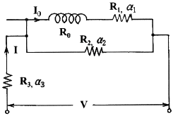
- R3/R1 = R0/R2
- R1R2 = R0R3
- R3/R2 = R0/R1
- R2R0 = R1
(정답률: 59%)
66. 진동편형 주파수계의 특징으로 틀린 것은?
- 지시의 신뢰성이 높다.
- 보통 1000Hz 이하에서 사용된다.
- 지시가 단계적이고, 연속성이 없다.
- 구조가 복잡하고, 전압의 파형에 영향이 있다.
(정답률: 61%)
67. 파형을 관측하여 주파수를 구하는데 가장 적합한 계기는?
- 전압계
- 전위차계
- 전류계
- 오실로스코프
(정답률: 88%)
68. 측정용 저주파 발진기로 주로 사용되는 것은?
- RC 발진기
- LC 발진기
- Beat 발진기
- 음차 발진기
(정답률: 59%)
69. 셰링발진기 회로에서 미지 커패시터 Cx와 미지저항 rx을 구하면? (단, Q=150Ω, P=180Ω, C=80pF, Cs=50pF이다.)
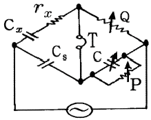
- rx = 94Ω, Cx = 60pF
- rx = 240Ω, Cx = 60pF
- rx = 94Ω, Cx = 42pF
- rx = 240Ω, Cx = 42pF
(정답률: 62%)
70. 전자기기용 전원 변압기에서 고려하지 않아도 되는 것은?
- 2차측 권선의 Q 값
- 삽입손실, 무부하 손실
- 누설자속
- 온도상승
(정답률: 67%)
71. 디지털(Digital) 전압계의 기본 원리에 해당하는 것은?
- 비교기
- 미분기
- A/D 변환기
- 분류기
(정답률: 83%)
72. 전선을 절단하지 않고 활선 상태에서 전류를 측정할 수 있는 것은?
- 직류 변류기
- 클램프 미터
- 열전형 전류계
- 가동 코일형 계기
(정답률: 69%)
73. 가동 코일형 계기의 동작 원리는?
- 줄의 법칙
- 열기전력 효과
- 플레밍의 법칙
- 키르히호프 법칙
(정답률: 69%)
74. 미소한 저항을 측정할 때 오차의 원인이 되는 접촉 및 리드선 저항을 최소화한 브리지는?
- 셰링 브리지
- 윈 브리지
- 휘트스톤 브리지
- 캘빈 더블 브리지
(정답률: 65%)
75. 오실로스코프로 측정 불가능한 것은?
- 전압
- 변조도
- 코일의 Q
- 주파수
(정답률: 89%)
76. 동조형 주파수계가 아닌 것은?
- 흡수형 주파수계
- 그리드 딥 미터
- 버터플라이형 주파수계
- 헤테로다인 주파수계
(정답률: 56%)
77. 직류 고전압 측정 시 사용될 수 있는 측정확대장치는?
- 저항 분류기
- 인덕턴스 분압기
- 저항 분압기
- 인덕턴스 변류기
(정답률: 72%)
78. 램프형 디지털 전압계의 구성 요소가 아닌 것은?
- 디지털 표시장치
- 정류기
- 비교 회로
- 계수 회로
(정답률: 52%)
79. 오실로스코프의 sweep의 [time/cm]가 1[ms/cm]이고 그림과 같이 a와 b의 간격이 4cm이었다면 주기 T는 몇 ms 인가?
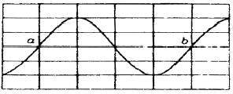
- 0.25
- 0.5
- 2
- 4
(정답률: 73%)
80. 불규칙한 비주기성 파형 또는 한 번만 발생하는 펄스 파형의 측정에 적당한 계기는?
- 주파수 카운터
- 싱크로스코프
- VTVM
- 엡스타인 장치
(정답률: 77%)